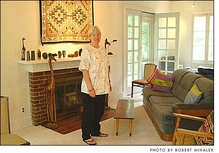

|  |
| Susanne Oldham in the refurbished living room at
the Arthur Morgan House. Oldham and her partner, John Semmlow, opened
the renovated B&B three weeks ago. |
Owners of Morgan House give B&B a new life, look
Susanne Oldham worked 18 hours a day, seven days a week,
from mid-January to April 23 to open the Arthur Morgan House on time.
“I did just about nothing else,”
she said. She got sick just once, for 36 hours. Then it was back to work.
She painted, spackled, grouted and made hundreds of
decisions as she, her partner, John Semmlow, her family and a group of
contractors renovated the 83-year-old building, which Oldham and Semmlow
purchased from Antioch University last December.
The renovated bed and breakfast opened three weeks
ago, and its first three weekends were booked, Oldham said in an interview
at the business last Friday.
When asked what it felt like to finally open the business,
Oldham simply said, “Hallelujah.” She added that she now gets
to do what she wanted to do when she purchased the building: take care
of her guests.
“I was not enthusiastic about renovating.
I was enthusiastic about running a B&B,” she said.
But to reopen, the bed and breakfast, which was built
in 1921 as the residence of Antioch College President Arthur Morgan and
his wife, Lucy, had to undergo major renovations. “Had we known
what we were getting into we would have had more reservations,”
Semmlow said in a telephone interview from his home in New Brunswick,
N.J.
“The wiring was the only thing in the house
that was in good shape. The only thing,” Oldham said.
So far, the renovations alone have cost more than $130,000,
Oldham said, which she and Semmlow paid for by refinancing property they
own. The price tag will increase as they continue to make repairs and
other upgrades, including replacing the second-floor windows. According
to the property information on the Greene County auditor’s Web page,
Oldham and Semmlow purchased the building for $255,000, below Antioch’s
asking price of $325,000.
Oldham said that their renovation budget was “completely
blown by the condition of the house,” especially the floors, which
had major structural damage. “It was a mess,” Oldham said.
“It was a very nasty surprise,” she added.
Another problem — holes in the walls and crumbling
ceilings —- was discovered when most of the wallpaper, which covered
much of the walls and ceilings, was removed.
The structural damage also slowed down the renovations,
so much that Oldham said that the entire project would have been completed
by opening if not for those major surprises.
Though the floors proved to be a major problem, the
biggest change to the building may be the addition of four new bathrooms.
Now each of the Morgan House’s six guest rooms has its own bath.
Each of the bedrooms has a bird theme — Heron’s
Room, Woodpecker’s Nest — and features a bird batik by artist
Robin Zimmerman. In fact, art featuring birds, including sculptures, is
placed throughout the house. Noting that she loves birds, Oldham said
the theme is an attempt to “bring the idea of nature into the house
as much as possible.”
All the wood floors were refinished, and new carpet
was laid on the stairs and in the living room. “I wanted this to
be a really welcoming, comfortable place” to read, listen to music
and play games, Oldham said of the living room. Oldham, a performing flutist,
plans to put in the room a piano her late mother, Gerda Oldham, owned,
and will host small concerts there.
In the new kitchen, Oldham prepares for her customers
breakfasts’ consisting of locally purchased and “mostly organically
grown” products. The house’s furnishings, including the beds,
are new or were purchased at auction or from Yellow Springers, Oldham
said.
The contractor was John Zearfoss, who with his brother,
Bob Zearfoss, operates Zearox Bros. Builders & Contractors. Larry
Gerthoffer, who owns Electric Service Company, installed two new heating
and cooling units in the third-floor bedrooms. A-C Service did the plumbing
and radiator upgrades.
Both Oldham and Semmlow credited John Zearfoss with
providing skilled craftsmanship and strong support. “They were willing
to work with us and let us work with them,” Semmlow said.
Oldham’s brother-in-law, Dan Beverly, an engineer
who lives in Yellow Springs, drew up the renovation plans. Other family
members provided help with their brains and muscles and with moral support,
Oldham said.
Oldham is running the B&B alone, while Semmlow
remains in New Brunswick, where he is a professor of biomedical engineering
at Rutgers Medical School. Every few weeks during the renovation, Semmlow
visited Yellow Springs, and he plans to spend part of his summers at Morgan
House.
Antioch placed the Morgan House up for sale last June
when the former proprietor, Marianne Britton, closed the business. Oldham,
a Yellow Springs native and former professional arts administrator, had
spent two years working with the Peace Corps in Africa when she returned
to town last fall, and the business was still available. A couple of months
later, the business — and its renovation —- was hers and Semmlow’s.
Oldham said that she pursued the opportunity because
“I thought I would be good at being a B&B person.”
“I’m pretty social, I like meeting
new people, I like to cook and serve people, I like to make people happy,
and I like Yellow Springs,” Oldham said.
Oldham is planning to host a community open house in
June, when Yellow Springers can “pop in, have a cup of coffee and
see the place.”
“I want to have the whole village over
to see it,” she said.
—Robert Mihalek
|